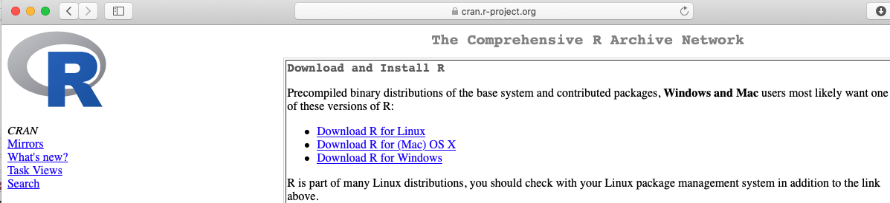

1 Installation
1.1 Motivation
One way to access R and RStudio is via an account at https://r.stem.calvin.edu/ (or if not a Calvin student, at posit.cloud). To use RStudio on one of these servers, all you need to do is log in, with nothing to install or maintain.
For many, this cloud approach is a great way to use RStudio, and they have no reason to install a standalone copy of the software on a personal computer. If you are happy using the server, exit this tutorial now and continue happily using the server!
If you have concerns about your internet bandwidth, speed, usage limits, or firewalls, or if you want to be able to work on assignments for this class somewhere without internet access, or if you need to analyze really large datasets or fit complex models, you may want to install R and RStudio and work locally instead of on the server.
Pros and Cons
The benefits of downloading your own copy are that you can work offline and should not be subject to any (hopefully rare) server-related errors, freezing, etc.
The negatives of downloading your own copy are that you have to maintain it yourself, installing and updating packages and software.
1.2 Goal
This document will guide you through the process of installing R, RStudio, and other necessary R packages on your own computer, if you choose to do so. Again, there is no course requirement to do this.
The process will have three stages, which work best in order:
- Install R
- Install RStudio
- Install necessary R packages from within RStudio
1.3 Download/Install 1 of 2: R
R downloads are available from https://cran.r-project.org/.
- Select the download that matches your operating system and hardware (Mac OS, Windows, Linux, etc.)
- You only need the “base” version.
- Download the installer and run it. You may want to choose not to create shortcuts, since you will access R only through RStudio.
Mac with Homebrew
Windows and Linux users: skip this section.
- If working on Mac OS and already using Homebrew to manage software packages, you can skip the manual download above and just run:
brew install r- If you want to get Homebrew and install this way on a mac, there are detailed instructions online – scroll down to “Instructions for Mac Users”. Note that you don’t necessarily need OpenBLAS for this course (as recommended on the linked website); it does not really matter either way.
1.4 Download/Install 2 of 2: RStudio
Once you have installed R, you next need to install RStudio.
- Downloads of RStudio are available at https://rstudio.com/products/rstudio/download/.
- You should select the free version of RStudio Desktop.
- Download and install the version that matches your operating system

Mac with Homebrew
Windows and Linux users: you can’t use Homebrew.
- If using a mac and Homebrew, you can alternatively install RStudio via:
brew cask install rstudio1.5 Install 3/3: Packages
In addition to base R and the RStudio IDE, we use a few add-on packages that you will need to install yourself.
- Open RStudio
- In your RStudio Console window, which is on the lower left by default, type (or copy and paste) the code below and click “Enter” to run it:
install.packages(c('rmarkdown', # reproducible research documents
'tidyverse', 'remotes', # graphics and data wrangling
'pander', # formatting tables
'glmmTMB', 'mgcv', # fitting regression models
'car', 'ggeffects'#, working with fitted models
# optional additions:
# 'mosaic', # formula-based summary stats and resampling
# 'openintro', # datasets
# 'shiny', 'plotly', 'gganimate', 'leaflet' # interactive graphics/maps
))
# if desired, for function to ggplot ACFs:
remotes::install_github('stacyderuiter/s245')- In addition to the packages you listed specifically, a number of dependencies (other packages that the packages you requested require to work) will be installed.
- The amount of time it takes will depend on your computer and internet connection speed, but as long as it finishes without any messages that literally say “Error: …”, it worked!.
- If RStudio prompts you to update packages or install additional dependencies, it’s usually a good idea to do so.
- If R asks you if you want to install a certain package “from source” blah, blah, “is newer…” usually you can answer yes (or no) and it will work either way.
- If you get an error or have any questions, get in touch with your professor.
TeX for PDF generation
To enable generation of PDF output from Rmarkdown documents, there is a little more code to run. (If you don’t know what this means yet, you will soon - and you do probably need to be able to do it.)
This one has two steps: installing the package, and then using the package to install the PDF-generation utility.
If you already have TeX/LaTeX/MikTeX installed on your computer, you can probably skip this installation (but it won’t hurt).
install.packages('tinytex')
tinytex::install_tinytex() # install TinyTeXPoint-and-Click Option
If you would like to install the packages interactively instead of on the command line (as already shown above), you can click the Packages tab on the lower right in RStudio, then click Install at the top of the tab. Enter the names of the packages you want to install in the middle “Packages” blank, and leave the rest of the default options, then click “Install”.

1.6 You did it!
If you complete all three steps above, you should have a working version of RStudio on your machine. To use it, just open RStudio; it should look nearly identical to the RStudio Server version you have been using online.
You don’t ever have to open or access R directly; RStudio does it all for you.
In case of any errors or problems, contact me (stacy.deruiter at calvin.edu) anytime and I’ll do my best to help.
(Don’t contact school help desks; they don’t support this software).